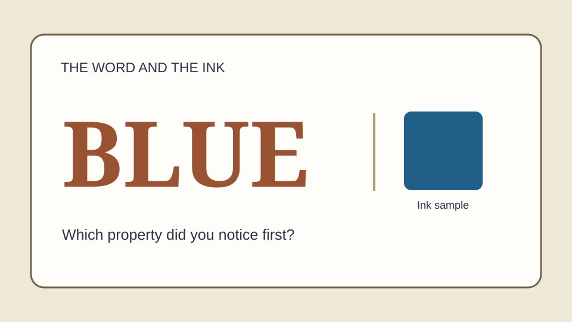

Before you pay for a twelve-minute meditation recording, try a twelve-minute question.
What exactly would the audio give you, and what does the research really support? This independent guide separates Zen12 Premium’s seller-described library from scientific findings about attention and suggestion.
Sources checked 14 November 2026. This is not personal-use testimony, medical advice, a checkout or an active affiliate recommendation.
Optional original 42-second film concept · NO playable media supplied
A word that refuses to disappear

Read the complete 42-second narration (available with no JavaScript)
“Look at the word BLUE. The ink is another color. Which answer jumps out first? In 1935, Stroop measured that tiny argument between a practiced habit and a new instruction. Years later, researchers found that targeted suggestion sometimes changed the interference for carefully selected people. The remarkable part is not proof of a magic recording; it is how much a precise question can reveal. Try a free twelve-minute observation routine below, and compare any commercial audio promise with the actual studies before buying.”
Six cue caption storyboard supplied separately as WebVTT. Media is not encoded, hosted or playable. Editorial QA must approve original video rights, captions, transcript and Core Web Vitals before a live A/B experiment.
What the ink-and-word experiment tells us
In 1935, J. Ridley Stroop asked participants to identify ink colors while familiar color words competed for attention. Decades later, researchers found that carefully worded suggestion could change that interference in selected highly suggestible volunteers. Those were specific laboratory conditions, not evidence that an audio product can reliably increase focus. Read Stroop’s paper and the 2006 suggestion experiment.
There is a useful, less glamorous insight here: a small instruction can change how you approach a task, and it is worth observing what happens rather than relying on an impressive promise. The study also showed that induction was not necessary for the reported reduction in its selected sample. It cannot validate a particular commercial soundtrack.
Before buying anything, try twelve minutes of observation
Minutes 0–3: choose an unfinished non-urgent task and write down exactly what a first three-minute step would be. Minutes 3–9: perform that step without switching tabs, recording distractions without judging them. Minutes 9–12: write what you did, how you felt, and what you merely inferred. Do not treat a feeling as proof of an effect.
For a longer free structure, use Final Vestige’s 52-page Seven Day Focus Fieldbook through its existing single Jetpack/Dispatch route. This guide is complete without subscribing.
What is Zen12 Premium actually offering?
The seller describes a downloadable meditation audio library with twelve levels and 48 MP3 recordings, a Quick Start Guide, manual, support, additional materials, and an advertised one-year money-back guarantee. Its public Premium page displayed $87.99 on 14 November 2026; this is not an independently authenticated referred checkout total, and taxes, offer changes, eligibility and real-world refund performance are unverified. The seller promotes a twelve-minute listening routine and describes brainwave entrainment. Those promotional benefit and equivalence claims have not been independently established for this product by Final Vestige.
That distinction is important. The product’s clearly described potential value is the convenience of organized, repeatable listening material for someone who wants a paid audio routine. It is not proven treatment, a guaranteed cognitive upgrade, or a substitute for professional care. Neither the Stroop research nor general meditation research independently substantiates this branded product’s claims.
Five questions to answer before purchasing
Do I need a recording?
No. Free, silent, self-directed practice is available. A paid library may be more convenient for some readers, but convenience is not a proven clinical benefit.
Does twelve minutes equal an hour?
That equivalence appears in the seller's marketing, not in a Final Vestige-verified, product-specific randomized trial. Do not rely on it as a fact.
What do I receive?
The seller lists 48 MP3s across twelve levels plus guides and extras. Confirm the exact current bundle, file access, compatibility and delivery at the merchant checkout.
What would I pay?
The public listing displayed $87.99 on the stated review date. Final price, tax, discount eligibility, upsells and referred checkout were not independently authenticated.
Can I get a refund?
The merchant advertises a one-year guarantee, but scope, timing, claims process and actual fulfillment have not been independently verified. Read the operative terms before paying.
A purchasing decision, not a promise
The reader who may want to evaluate Zen12 is someone seeking a structured audio routine, comfortable paying for convenience, and willing to distinguish its seller-described contents from unproven claims. If your goal is relief from a diagnosed condition or a scientifically guaranteed performance boost, this page cannot substantiate either outcome.
Affiliate transparency: If a purchasing link is later authorized and you buy through it, Final Vestige may earn a commission at no additional cost to you. This independent guide is not evidence of having personally used Zen12.
Not active. Final Vestige publisher approval, permitted channels, actual issued tracking URL, referred checkout and terms must be verified first. No merchant link is present in this draft.
Check the records
Independent studies: Stroop (1935), Raz et al. (2002), Raz et al. (2005), Raz et al. (2006). FTC endorsements and health-claim guidance. Seller descriptions and public pricing were checked separately against the official Zen12 page on the review date; the sales destination is deliberately withheld until authorization.